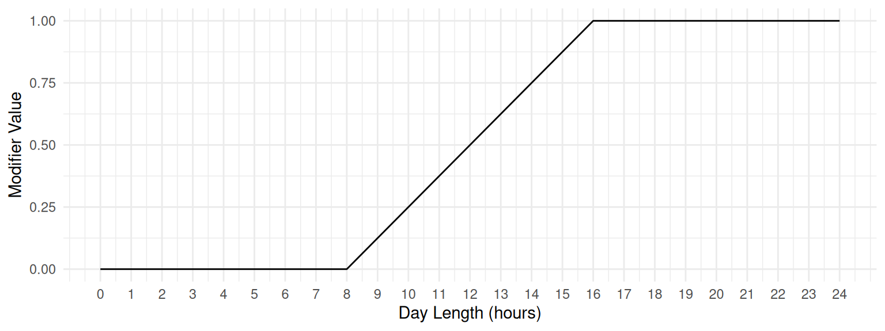
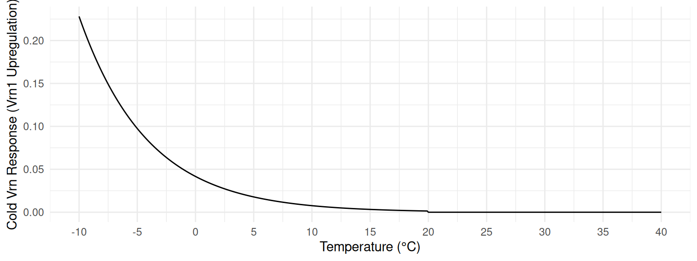
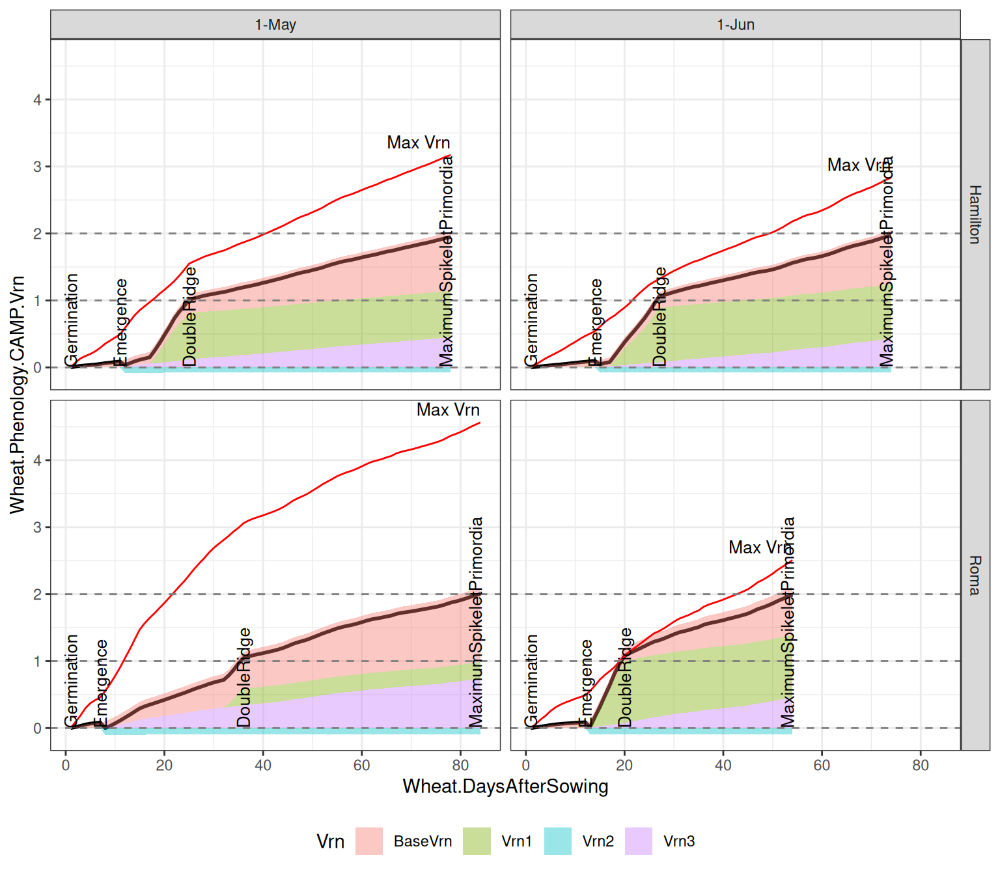

LeavesInitiating
The LeavesInitiating phase in the Wheat model represents the developmental period from Emergence to DoubleRidge, driven by the expression of the Vrn1, Vrn2, and Vrn3 genes. This phase concludes when vernalisation is saturated, as predicted by the Cereal Anthesis Molecular Phenology (CAMP) model.
Overview
The VernalisationPhase Model is used to simulate the progress of vernalisation requirements. This phase begins when Plant Emergence to DoubleRidge.
Methodology
See VernalisationPhase and CAMP model for details on how the vernalisation progress is calculated. Here is focusing on the parameters used in this phase, i.e. CAMP with the following parameters:
TT: Daily thermal timeHaunStage: Haun stage is the number of leaves on the main stemDeltaHaunStage: Change in Haun stage from the previous dayBasePhyllochron: Base Phyllochron, the thermal time required for each new leaf to appear under standard conditionsPpResponse: Photoperiod response for vernalisationColdVrnResponse: Function for cold temperature response driving Vrn1 expressionEnvData: The controlled environmental conditions under which Final Leaf Number (FLN) observations were madeFLNparams: Final leaf number (FLN) for a genotype under controlled environmental conditionscalcCAMPVrnRates: Function to calculate the Vrn1, Vrn2, and Vrn3 rates based on the above parameters
Thermal Time (TT)
The daily thermal time is based on SubDailyInterpolation with three cardinal temperature and ThreeHourAirTemperature interpolation method.
Haun Stage (HaunStage) and Delta Haun Stage (DeltaHaunStage)
Haun Stage (\(HS\)) and \(\Delta HS\) is calculated from daily thermal time and a cultivar-specific phyllochron, which is the rate of leaf appearance.
Base Phyllochron (BasePhyllochron)
The Base Phyllochron is defined as the thermal time required for each new leaf to appear under standard conditions with a default value of 120 °C·days.
Photoperiod Response (PpResponse)
In the CAMP model, the photoperiod response is used to calculate the Vrn2 expression.
Cold Vernalisation Response (ColdVrnResponse)
The daily upregulation of Vrn1 from cold temperature counts for sub-daily temperature variations.
The hourly temperature is interpolated from the daily minimum and maximum temperatures using a sinusoidal method during sunlight hours and an exponential decline during nighttime hours (Goudriaan and Van Laar 1994).
The hourly upregulation of Vrn1 from cold temperature is calculated using a cold response function, with the following parameters:
| Name | Description | Value |
|---|---|---|
| k | Exponential shape factor for cold temperature response. | -0.17 |
| deVernalisationTemp | Temperature above which de-vernalisation occurs. | 20 |
| deVernalisationRate | Rate of Vrn1 downregulation above the temperature threshold. | 0 |
deVernalisationRate is set to 0, indicating that there is no down-regulation of Vrn1 expression at temperatures above the de-vernalisation threshold (i.e. 20°C).
The upregulation of Vrn1 from cold at hourly temperature \(T\) is shown in the following plot.

Finally, the daily upregulation of Vrn1 from cold temperature is calculated by summing the hourly upregulation over the day using method in SubDailyInterpolation.
Note: The hourly interpolation of temperature is different with three hourly interpolation method which is used in the Thermal Time.
Controlled Environment Conditions (EnvData)
The controlled environment conditions under which Final Leaf Number (FLN) observations were made include:
| Name | Description | Default Value |
|---|---|---|
| VrnTreatTemp | Vernalisation treatment temperature (°C) | 6 |
| VrnTreatDuration | Days of exposure to vernalising temperature | 60 |
| TreatmentPp_L | Photoperiod under long-day treatment (hours) | 16 |
| TtEmerge | Observed thermal time from sowing to emergence (°C·days) | 90 |
These parameters are used in the FLNParameterEnvironment of CAMP.
Final leaf number (FLNparams)
The final leaf number (FLN) for a genotype are observed or estimated under four controlled environmental conditions, which are the key driver of progress to the DoubleRidge stage.
The four FLN parameters include:
| Name | Description | Default Value |
|---|---|---|
| MinLN | Final Leaf Number under full vernalisation and long photoperiod (>16h) | 8.3 |
| PpLN | Increase in FLN under short photoperiod (<8h) following full vernalisation | 3.8 |
| VrnLN | Increase in FLN when un-vernalised and grown under short photoperiod | 5.0 |
| VxPLN | Change in FLN from photoperiod effect under un-vernalised, long-day growth | -2.0 |
These parameters are used in the FinalLeafNumberSet of CAMP. See FinalLeafNumberSet for details on how these parameters are used to calculate the final leaf number (FLN) for a genotype under controlled environmental conditions.
Calculation of Vrn expression (calcCAMPVrnRates)
The internal function calcCAMPVrnRates is used to calculate the Vrn1, Vrn2, and Vrn3 rates based on the above parameters. It only requires an external parameter Base Phyllochron which is defined as the thermal time required for each new leaf to appear under standard conditions with a default value of 120 °C·days.
Cultivar-Specific Parameters
| Name | Description | Default Value |
|---|---|---|
| [Phenology].CAMP.FLNparams.MinLN | Final Leaf Number under full vernalisation and long photoperiod | 8.3 |
| [Phenology].CAMP.FLNparams.PpLN | Increase in FLN under short photoperiod following full vernalisation | 3.8 |
| [Phenology].CAMP.FLNparams.VrnLN | Increase in FLN when un-vernalised and grown under short photoperiod | 5.0 |
| [Phenology].CAMP.FLNparams.VxPLN | Change in FLN from photoperiod effect under un-vernalised, long-day growth | -2.0 |
| [Phenology].CAMP.EnvData.VrnTreatTemp | Vernalisation treatment temperature (°C) | 6 |
| [Phenology].CAMP.EnvData.VrnTreatDuration | Days of exposure to vernalising temperature | 60 |
| [Phenology].CAMP.EnvData.TreatmentPp_L | Photoperiod under long-day treatment (hours) | 16 |
| [Phenology].CAMP.EnvData.TtEmerge | Observed thermal time from sowing to emergence (°C·days) | 90 |
Practical Example
No practical example is provided here.
Simulation Example
We demonstrate progress of leaf initiation phase using example simulations for wheat. These simulations illustrate how Vrn expression progresses the development of wheat phenology.
Two cultivars, Emu_Rock and Sunlamb, are used in the example simulations to represent the very quick and very late maturity types, respectively (Celestina et al. 2023). The following table shows the FLN parameters for these two cultivars:
| Parameter | Emu_Rock | Sunlamb |
|---|---|---|
| [Phenology].CAMP.FLNparams.MinLN | 6 | 7 |
| [Phenology].CAMP.FLNparams.PpLN | 1 | 5 |
| [Phenology].CAMP.FLNparams.VrnLN | 1 | 10 |
| [Phenology].CAMP.FLNparams.VxPLN | -1 | -5 |

The vernalisation rate parameters are calculated for each cultivar using the calcCAMPVrnRates function at Sowing, and should be genotype-specific values. The following table shows the calculated parameters for Emu_Rock and Sunlamb cultivars:
| Parameter | Emu_Rock | Sunlamb |
|---|---|---|
| BaseDVrnER | 0.37 | 0.14 |
| BaseDVrnVeg | 0.34 | 0.09 |
| MaxDVrnER | 0.57 | 0.37 |
| MaxDVrnVeg | 0.49 | 0.50 |
| PpVrn3FactER | 1.52 | 2.70 |
| PpVrn3FactVeg | 2.69 | 2.70 |
| MaxVrn2 | 0.32 | 0.22 |
| MethalationThreshold | 0.63 | 1.04 |
| ColdVrn1Fact | 4.86 | 30.95 |
Total Vrn Expression
This plot shows the progress of the Vrn1 expression for the cultivar Sunlamb and Emu_Rock on the sowing date 1-May and 1-Jun. The LeavesInitiating phase is finished when Wheat.Phenology.CAMP.Vrn1 equal to 1 at vernalisation saturation.

The total \(Vrn\) expression is the sum of the three Vrn genes, i.e. \(Vrn = Vrn_{\text{base}} + Vrn1 + Vrn3 - Vrn2\), and capped below \(Vrn_{\text{max}}\). The following figure shows the Vrn expressions for three Vrn genes for very late cultivar Sunlambon the sowing date 1-May and 1-Jun.

Final Leaf Number

References
Celestina, Corinne, James Hunt, Haydn Kuchel, Felicity Harris, Kenton Porker, Ben Biddulph, Maxwell Bloomfield, et al. 2023. “A Cultivar Phenology Classification Scheme for Wheat and Barley.” European Journal of Agronomy 143 (February): 126732. https://doi.org/10.1016/j.eja.2022.126732.
Goudriaan, J., and H. H. Van Laar. 1994. “Climatic Factors.” In Modelling Potential Crop Growth Processes, edited by J. Goudriaan and H. H. Van Laar, 29–49. Dordrecht: Springer Netherlands. https://doi.org/10.1007/978-94-011-0750-1_3.